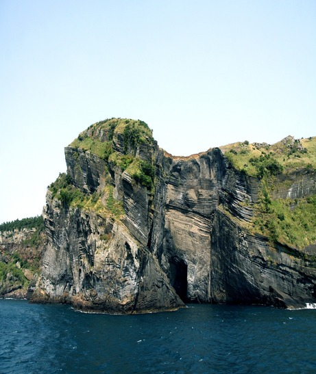

JejuTour
테마여행 제주마을 산책 성산읍
성산읍은 대부분의 제주 여행객들이 찾는 지역인 만큼 유명한 관광지가 많지만,
그에 못지않게 작고 특색 있는 카페와 문화를 즐길 수 있는 공간들이 곳곳에 자리 잡고 있다.
골목 안쪽에서 우리를 기다릴, 미처 몰랐던 성산읍을 발견해보자.

성산읍은 대부분의 제주 여행객들이 찾는 지역인 만큼 유명한 관광지가 많지만,
그에 못지않게 작고 특색 있는 카페와 문화를 즐길 수 있는 공간들이 곳곳에 자리 잡고 있다.
골목 안쪽에서 우리를 기다릴, 미처 몰랐던 성산읍을 발견해보자.